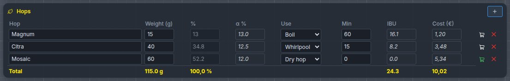
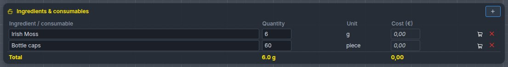
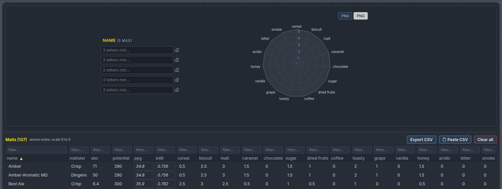
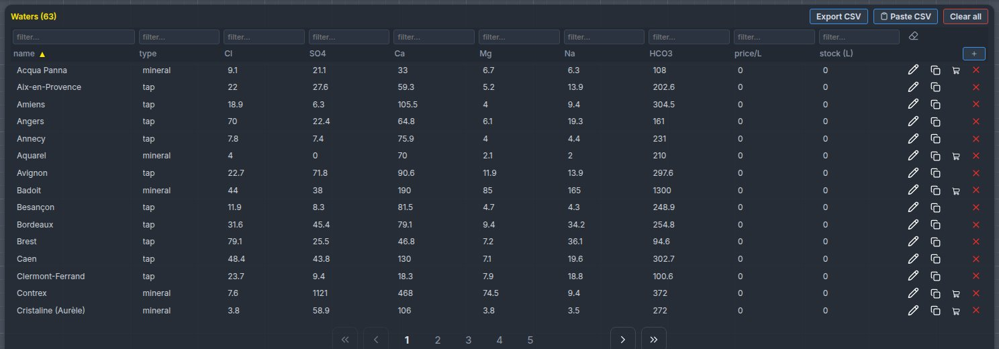
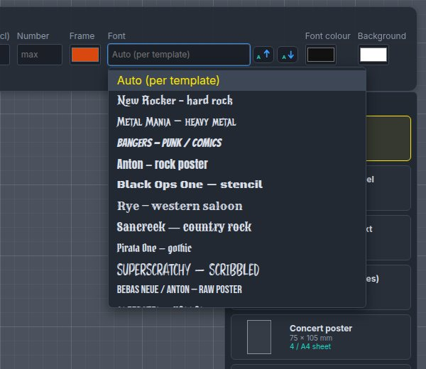
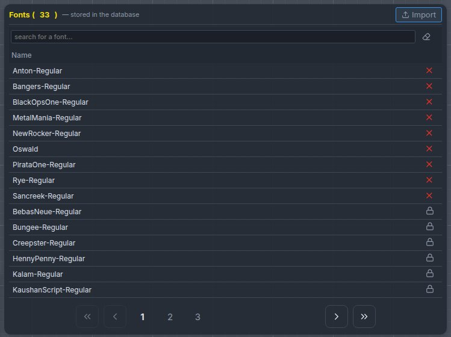

OpenMaltForge documentation
OpenMaltForge (formerly OpenBrew, and BrewCraft before version 5.0.0) is a desktop application for designing beer recipes: gravity, bitterness and colour calculations, water and minerals, brewing process, costs, stock and shopping list, recipe library, printable labels and brew sheet.
Getting started
- Linux: install the
openmaltforge_<version>_amd64.debpackage (“OpenMaltForge” menu entry) or run theopenmaltforge_<version>_linux_amd64program directly. - Windows: run
OpenMaltForge_<version>.exe.
OpenMaltForge opens in its own window (engine of the Chrome, Chromium, Edge or Brave browser installed on the computer).
All the data is stored in a single file: ~/OpenMaltForge/openmaltforge.sqlite (home folder, OpenMaltForge
sub-folder). On first launch, the OpenBrew database (~/OpenBrew/openbrew.sqlite), or else the BrewCraft one (~/BrewCraft/brewcraft.sqlite), is taken over
automatically, or failing that a database from a 3.x version (brewcraft_3.x.sqlite); the old file is
not modified.
OpenMaltForge always opens on the Design screen.
A new database is filled with the starter data: malts, hops, yeasts, BJCP 2021 styles, waters, ingredients, fonts.
The interface

- Menu: Design, Library, the databases (Malts, Hops, Yeasts, Waters, Styles, Ingredients, Consumables), HTML, Labels, Brew sheet, Settings, then the Documentation icon (open book) that shows this page, and the coffee icon to support the development of OpenMaltForge with a donation: a “Buy me a coffee” window explains what the donation is for; its button opens the “Buy Me a Coffee” page in your usual browser.
- Save: immediately writes all the data to the database. An automatic save also takes place (every 5 minutes by default, adjustable in Settings › General settings).
- “Database: openmaltforge.sqlite” indicator: green when everything is saved. If there is a problem (program closed, write refused), an orange warning appears; a click retries the save.
- Notification area (under the menu): temporary messages in green (save, calculation), errors in red, persistent warnings in orange (for example a mash ratio too high for the tun). Several messages are shown side by side.
- Theme: the sun / moon switch, top right, toggles between the dark and light themes; the choice is remembered.
- Footer: licence (GNU GPL v3, click to read the text) and version number.
Designing a recipe
The Design screen holds the current recipe. Everything is recalculated as you type.
Recipe and targets
- Recipe, Style (BJCP 2021 styles), Volume to bottle, Mash ratio (L/kg), brewing and bottling dates.
- Target OG, Target IBU and the Calculate button: adjusts the malt and hop quantities to reach the intended original gravity and bitterness, keeping the proportions.
- ＋ New recipe: starts again from a blank recipe (targets and ratio take the default values from Settings); the shopping list is emptied.
- Aroma radars for malts, hops and yeasts: profile of the recipe, value shown when hovering over a point, enlarged on click (Esc to close), exported as an image with the PNG buttons (dark or light background).
Malts, hops, yeasts

- The ＋ button in the title adds a row; the red cross deletes it.
- Name: type at least 3 letters to choose from the database (the maltster is shown after the malt name).
- Weight or percentage: enter the weights, or the percentages (the weight is then calculated; entering a weight again switches back to weight mode).
- Hops: weight, use (First Wort, Boil, Whirlpool, Hopstand, Dry hop) and time; IBUs are calculated with the Tinseth formula, weighted by the utilisation coefficients from Settings.
- Yeasts: number of sachets, attenuation and flocculation of the strain.
- Cart at the end of the row: adds the component to the shopping list (see Shopping list). It is orange when the stock is not enough, green when the component is already in the list.

Water and minerals

- Choose one or more waters (“Waters” database) and their share, in litres or as a percentage.
- The ions (Cl, SO4, Ca, Mg, Na, HCO3) of the blend are compared with the style ranges; the additions row (mg/L) calculates the mineral quantities, which are added automatically to the recipe ingredients (“— auto” rows).
Ingredients and consumables

Rests, water quantities, priming


Recipe summary and costs

Original and final gravities, attenuation, flocculation, IBU, colour (EBC / SRM), alcohol, IBU / OG and RBR ratios, with the expected range for the chosen style, then the estimated colour of the beer.

Sensory analysis

Tasting date, measured gravities, actual ABV, colour, clarity, head, carbonation, then notes and comments for each criterion (aroma, appearance, flavour, mouthfeel, overall impression).
Entering mathematical expressions
In any input field, a text starting with = is calculated. The result replaces the formula when you confirm with Enter or leave the field, and it is taken into account like a normal entry.

=4,5+0,25 in the weight (kg) of the first malt…
| Element | Syntax | Example | Result |
|---|---|---|---|
| Addition, subtraction | + - | =4.5+0.25 | 4.75 |
| Multiplication, division | * or ×, / or ÷ | =3*(2+1.5)/4 | 2.625 |
| Power | ^ | =2^10 | 1024 |
| Parentheses | ( ) | =(20-12)*1.5 | 12 |
| Percentage | % after a number (÷ 100) | =30*85% | 25.5 |
| Square root | sqrt( ) | =sqrt(16) | 4 |
| Absolute value | abs( ) | =abs(12-20) | 8 |
| Rounding | round( ) | =round(40/3) | 13 |
| Negative number | - in front | =-2+5 | 3 |
- The comma or the point can be used as the decimal separator (
4,5=4.5); spaces are ignored. - Usual precedence: parentheses, then power, then multiplication and division, then addition and subtraction.
- In a numeric field, the = key (or pasting text that starts with
=) switches the field to text entry while you type the formula. - An invalid formula (missing parenthesis, division by zero…) is not applied: the field flashes red and its tooltip says “Invalid formula”.
- The result is rounded to 12 significant digits.
=5.6*80%), convert 12 oz to grams (=12*28.35), complete a volume (=30-4.2-1.5).Shopping list and stock

Automatic additions
- A malt, hop, yeast, ingredient, consumable or mineral water used in the current recipe enters the list as soon as the recipe uses up its stock (quantity required ≥ stock); the suggested quantity is what is missing (or the quantity used when the stock falls exactly to zero). For waters, it is the litres of each mineral water in the blend; tap waters are never added.
- It leaves the list automatically as soon as the stock is enough again (for example by lowering the quantity in the recipe).
- Frozen quantities: once an item is in the list, its quantity no longer changes by itself (“Calculate” button, changing a row…). If it becomes lower than what is missing, an orange triangle appears next to the quantity (its tooltip shows what is missing) and an orange notification lists the items concerned; correct the quantity to make them disappear.
- Components not used by the recipe are never added, even with a stock of zero.
- ＋ New recipe empties the shopping list (manual additions included); it then fills up again from the new recipe.
Manual additions
- Cart at the end of a recipe row: adds the component if it is not already in the list (missing quantity, otherwise the quantity used by the recipe).
- Cart in the database screens (Malts, Hops…, mineral waters): adds the item with the quantity missing for the recipe, or a default quantity.
- An item added by hand, or whose quantity you change, is never removed automatically.
- The cross removes an item; if it is still missing for the recipe, it is not put back as long as the stock remains used up.
- The printer icon in the title prints the shopping list (or saves it as PDF).
Stock
- Each database has a stock column (kg for malts, g for hops and ingredients, sachets for yeasts, units for consumables, litres for waters).
- Waters database: price/L and stock (L) for mineral waters; their cost is included in the water cost of the recipe.
- When the bottling date of the recipe is filled in, the brew is “achieved”: its components are deducted from the stock, once only. Clearing the date puts them back in stock.
Library and imports

- “Save” in the Design screen stores the current recipe in the library (updated if it is already there).
- Pencil: opens the recipe in the Design screen. Cross: deletes it (after confirmation).
- Columns: name, brewer, achieved, style, OG, FG, IBU, EBC, ABV, malts, hops, yeasts; a row of filters and sorting by clicking the header. The eraser button clears all the filters.
- Card view: display as cards with the colour of the beer.
- Brew number:
year#rank(e.g.2026#12), rank by brewing date among the recipes of the year, imported recipes excluded. It appears on the labels and in the HTML. - Import beer.xml (BeerXML 1.0) and Import PDF (printout of a Brewfather recipe, BeerSmith PDF export): imported recipes are read-only (copy them to edit them). Import beer.xml: an ingredient missing from the database is added with the data from the file. Import PDF: an “Ingredient matching” dialog offers to link each unknown ingredient to a database ingredient; otherwise it remains plain text in the recipe.

Ingredient databases
Malts, Hops, Yeasts, Waters, Styles, Ingredients, Consumables screens: the reference database used by the recipes.

- A row of filters under the headers (text or number); sorting by clicking the header; pagination by 15 rows.
- At the end of the row: pencil (edit the row, read-only otherwise), duplicate, cart (shopping list), cross (delete). The ＋ in the header adds a row.
- Export CSV, Paste CSV (import rows from a spreadsheet) and Clear all.
- Aroma notes on a scale of 0 to 5; malts, hops and yeasts can be compared on a radar (up to 5 names).
- Styles: the 123 BJCP 2021 styles with description, ranges (IBU, SRM, OG, FG, ABV) and water profiles; ＋ Style to add one.


HTML rendering

Labels

- Formats (right-hand column): bands, rectangular and round labels, caps, neck labels, illustrated templates (gig poster, saloon, vinyl, reggae, romantic, soul, punk…), with their dimensions and the number per A4 sheet.
- QR Code text (an address or free text), Volume (cl), Number of labels, colours of the frame, the font and the background.
- Font: drop-down list where each font is shown in its own style; type a few letters to filter, arrows and Enter to choose. The A↑ / A↓ buttons enlarge or reduce the text.
- The label logo is chosen in Settings › Label logo. The brew number is calculated automatically.
- Print / PDF: prints the sheet (or saves it as PDF).

Brew sheet

- Five layouts: Classic, Form to fill in, Rock poster, Step by step, Brew log.
- Colours of the frame / accent, the background and the font; choice of the font (each name shown in its own font).
- You can type directly in the sheet: volumes, gravities and rests actually obtained, and brewing notes; everything is saved with the recipe.
- Print / PDF.
Settings


- Equipment & process: equipment name, volume to bottle, mash efficiency; Default values: boil time, evaporation, initial water temperature, heating rate, cooling, grain absorption, target OG and IBU, mash ratio (applied to each new recipe). The recipe’s mash ratio is entered in the Design screen.
- Process — water losses and additions: the process in phases (by default: mash → pre-sparge, sparge → ice, bottling), step by step, with the volume and the gravity calculated on every row. ＋ Phase adds a phase, ＋ (at the head of the columns) adds a step to the phase; the pencil at the end of each row makes the phase name, or the step name, losses and additions, editable (OK or Enter to confirm); ▲ ▼ move a step (at the edge of a phase it moves into the neighbouring phase) or a phase; ✕ deletes (a phase that contains steps asks for confirmation). An empty box takes the automatic value from the Settings. The OG row follows the ice phase, the FG row ends the last phase. ↺ default returns to the original process.
- Brewing settings: basic data, losses and additions, constraints and temperatures; an empty box takes the automatic value (recipe or equipment). A red field signals that a limit is exceeded (for example the maximum volume of the tun).
- Electricity needs: power and duration of each item, kWh and cost.
- Hop utilisation coefficients per use, applied to the Tinseth IBUs.
- Label logo: choose an image.
- Fonts: Google Fonts stored in the database; Import (several files at once), filter, preview on hover. The interface fonts, marked with a padlock, cannot be deleted; when another font is deleted, a dialog offers a replacement font.
- Units: section in preparation (disabled).
- To look up (shown only when needed): ingredients found during a PDF import and missing from the database. The Copy the prompt button copies a ready-made request, in the interface language, to send to an AI with web access: it looks up these ingredients and produces CSV files to paste into the Malts, Hops, Yeasts and Ingredients screens (“Paste CSV”).

- Auto-save: on or off, and delay in minutes (0 = after each change). When it is off, only the “Save” button writes to the database.
- Interface language: French, English, Spanish, Italian, Portuguese. The whole interface is translated, including the prompt of the “To look up” section and this documentation (in languages other than French, the screenshots show the English interface).
- Export the database…: downloads a copy
YYYYMMDD_openmaltforge.sqliteof the displayed state. - Change database…: replaces the database with the content of another
.sqlitefile; the file is checked and upgraded, and a copy of the current database is kept insauvegardes/.

Data and backups
- Single database:
~/OpenMaltForge/openmaltforge.sqlite(a single file, which can be copied at any time). - Before any upgrade of the database structure, and before changing database, a copy is made in
~/OpenMaltForge/sauvegardes/. - A database created by a more recent version of OpenMaltForge is refused (install the latest version).
- Old databases (BrewCraft 1.x to 4.x) are recognised and converted; the OpenBrew 5.x database (
~/OpenBrew/openbrew.sqlite), or else the BrewCraft 4.x one (~/BrewCraft/brewcraft.sqlite), is taken over on the first launch of OpenMaltForge.
Tips
- Calculated fields (darker background, read-only): hover over them for half a second to see how the value is calculated.
- Esc closes dialogs and enlarged views; Enter confirms.
- Clicking in a field selects its content: what you type replaces it directly.
- Formulas (=) work everywhere, including in the databases and the settings.
OpenMaltForge — application licensed under GNU GPL v3. Lucide icons (ISC licence).